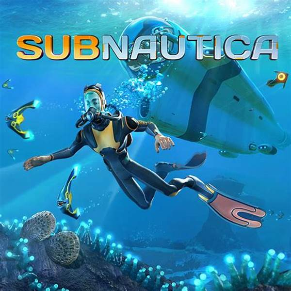

Subnautica é um jogo de sobrevivência em um mundo aberto subaquático, que se passa no planeta 4546B (fictício). Já ouviu aquele ditado "Quando a água bate na bunda, ou você aprende a nadar ou morre afogado"? Então, o protagonista não teve escolha a não ser nadar e explorar esse planeta inexplorado. Após a sua nave 'Aurora' cair nesse planeta, o protagonista do jogo se encontra sozinho diante dos outros tripulantes da nave, porém depois de explorar este oceano vasto e alienígena descobre que tem companhias. O planeta guarda muitos segredos, incluindo espécies totalmente extraordinárias e perigosas (vai por mim, você não gostaria de encontrá-las pessoalmente) e também uma misteriosa estrutura alienígena.
A história do jogo gira em torno de uma infecção bacteriana chamada 'Kharaa', que está contaminando tudo que entra no planeta. Eventualmente o protagonista descobre que a estrutura alienígena foi criada para conter e pesquisar essa bactéria e acabou deixando o planeta em quarentena, para impedir que esse 'Kharaa' não se dissemine. Após uma tentativa falha de resgate, no qual a estrutura simplesmente dizimou a nave que entrou no planeta para resgatar o protagonista, com um ultramegablastermaster raio lazer ;-;, o protagonista começa a explorar biomas deslumbrantes, para coletar recursos e desvendar o mistério da bactéria e dos alienígenas. Sabendo que a estrutura não deixará nada entrar e nada sair do planeta, o protagonista então vai atrás da cura dessa infecção para desativar a estrutura. Feito isso, ele baixa o Elon Musk e constrói um foguete para a fuga do planeta.
Em resumo, Subnautica não é apenas um jogo de sobrevivência; ele oferece uma narrativa envolvente de mistério, exploração e a luta pela vida em um ambiente hostil e desconhecido, desafiando o jogador a desvendar os segredos de 4546B enquanto enfrenta criaturas e condições adversas. Para quem gosta de jogos de exploração, esse jogo se encaixa perfeitamente, além de diversos biomas, existem diversas criaturas e coisas diferentes para serem feitas, podendo também construir a sua própria base e veículos como submarinos e trajes exoesqueletos.